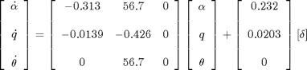
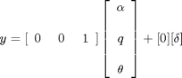
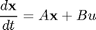
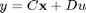
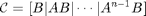
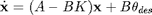
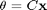
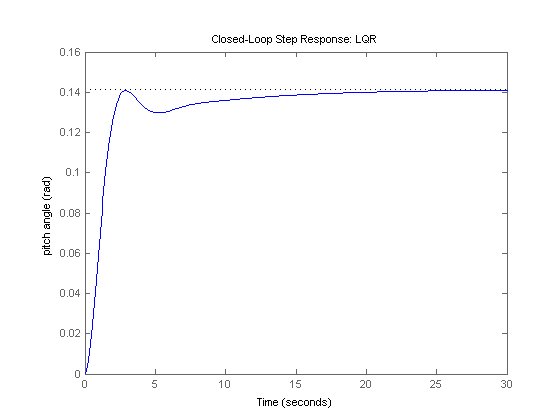
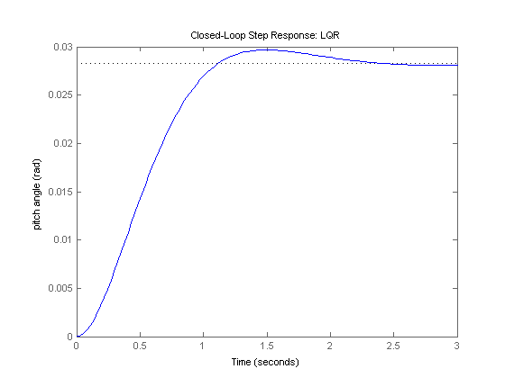
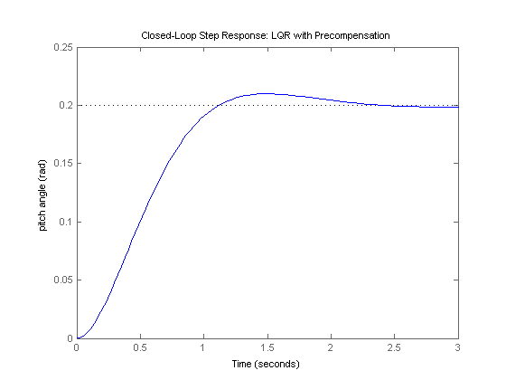

Aircraft Pitch: State-Space Methods for Controller Design
Key MATLAB commands used in this tutorial are: ss , ctrb , rank , lqr , step
Contents
In the Aircraft Pitch: System Modeling page. the state-space model of the plant was derived as
(1)
(2)
where the input is elevator deflection angle and the output is the aircraft pitch angle . The above equations match the general, linear state-space form.
(3)
(4)
For a step reference of 0.2 radians, the design criteria are the following.
- Overshoot less than 10%
- Rise time less than 2 seconds
- Settling time less than 10 seconds
- Steady-state error less than 2%
In this page we will apply a state-space controller design technique. In particular, we will attempt to place the closed-loop poles of the system by designing a controller that calculates its control based on the state of the system.
Controllability
In order to apply our state-space controller design techniques we need to first verify an important property, controllability. The controllability property is necessary to guarantee that we have the authority to drive the state of the system anywhere we like. This corresponds to the ability to place the closed-loop poles of the system anywhere in the complex s-plane.
For the system to be completely state controllable, the controllability matrix
(5)
must have rank n. The rank of a matrix is the number of independent rows (or columns). The number n corresponds to the number of state variables of the system. Adding additional terms to the controllability matrix with higher powers of the matrix A will not increase the rank of the controllability matrix since these additional terms will just be linear combinations of the earlier terms.
Since our controllability matrix is 3x3, the rank of the matrix must be 3. The MATLAB command rank can give you the rank of this matrix. Create a new m-file and enter the following commands. Running this m-file in the MATLAB command window, will produce the following output.
A = [-0.313 56.7 0; -0.0139 -0.426 0; 0 56.7 0]; B = [0.232; 0.0203; 0]; C = [0 0 1]; D = [0]; co = ctrb(A,B); Controllability = rank(co)
Controllability =
3
Therefore, our system is completely state controllable since the controllability matrix has rank 3.
Control design via pole placement
The schematic of a full-state feedback control system is shown below (with D = 0).

where
- K = control gain matrix
- x = [ alpha, q, theta ]' = state vector
- theta_des = reference (r)
- delta = theta_des - K x = control input (u)
- theta = output (y)
Referring back to the state-space equations at the top of the page, we see that substituting the state-feedback law = - K x for leads to the following.
(6)
(7)
Based on the above, matrix A - BK determines the closed-loop dynamics of our system. Specfically, the roots of the determinant of the matrix [ sI - ( A - BK ) ] are the closed-loop poles of the system. Since the determinant of [ sI - ( A - BK ) ] is a third-order polynomial, there are three poles we can place and since our system is completely state controllable, we can place the poles anywhere we like. Recall from the Introduction: State-Space Methods for Controller Design page. that a "pole-placement" technique can be used to find the control gain matrix K to place the closed-loop poles in the desired locations. Note that this feedback law presumes that all of the state variables in the vector x are measured, even though is our only output. If this is not the case, then an observer needs to be designed to estimate the other state variables.
We know from the above that we can place the closed-loop poles of the system anywhere we would like. The question then that is left is, where should we place them? If we have a standard first- or second-order system, we then have relationships that directly relate pole locations to characteristics of the step response and can use these relations to place the poles in order to meet our given requirements. This process becomes more difficult if we have a higher-order system or zeros. With a higher-order system, one approach is to place the higher-order poles 5-10 times farther to the left in the complex plane than the dominant poles, thereby leading them to have negligible contribution to the transient response. The effect of zeros is more difficult to address using a pole-placement approach to control. Another limitation of this pole-placement approach is that it doesn't explicitly take into account other factors like the amount of required control effort.
Linear quadratic regulation
We will use a technique called the Linear Quadratic Regulator (LQR) method to generate the "best" gain matrix K, without explicitly choosing to place the closed-loop poles in particular locations. This type of control technique optimally balances the system error and the control effort based on a cost that the designer specifies that defines the relative importance of minimizing errors and minimimizing control effort. In the case of the regulator problem, it is assumed that the reference is zero. Therefore, in this case the magnitude of the error is equal to the magnitude of the state. Please consult your control textbook for details. To use this LQR method, we need to define two parameters: the state-cost weighted matrix (Q) and the control weighted matrix (R). For simplicity, we will choose the control weighted matrix equal to 1 (R=1), and the state-cost matrix (Q) equal to pC'C. Employing the vector C from the output equation means that we will only consider those states in the output in defining our cost. In this case, is the only state variable in the output. The weighting factor (p) will be varied in order to modify the step response. In this case, R is a scalar since we have a single input system.
Now we are ready to find the control matrix (K) employing the MATLAB command lqr. We will first let the weighting factor (p) equal 2. Add the following commands to your m-file and run it in the MATLAB command window.
p = 2; Q = p*C'*C R = 1; [K] = lqr(A,B,Q,R)
Q =
0 0 0
0 0 0
0 0 2
K =
-0.5034 52.8645 1.4142
Note the structure of the weighting matrix Q and the resulting gain matrix K. Referring to the closed-loop state equations given above assuming a control law with non-zero reference, = - K x, we can then generate the closed-loop step response by adding the following commands to your m-file and running it in the MATLAB command window. Note that the response is scaled to model the fact that the pitch angle reference is a 0.2 radian (11 degree) step. The step response shown below should then be generated.
sys_cl = ss(A-B*K, B, C, D); step(0.2*sys_cl) ylabel('pitch angle (rad)'); title('Closed-Loop Step Response: LQR');
Examination of the above demonstrates that the response is too slow. We can tune the performance of our system to be faster by weighting the importance of the error more heavily than the importance of the control effort. More specifically, this can be done by increasing the weighting factor p. After some trial and error, we settle on a value of p = 50. Modify the code of your m-file as follows and then run at the command line to produce the following step response.
p = 50; Q = p*C'*C; R = 1; [K] = lqr(A,B,Q,R) sys_cl = ss(A-B*K, B, C, D); step(0.2*sys_cl) ylabel('pitch angle (rad)'); title('Closed-Loop Step Response: LQR');
K = -0.6435 169.6950 7.0711
Examination of the above demonstrates that the rise time, overshoot, and settling time are satisfactory. However, there is a large steady-state error. One way to correct this is by introducing a precompensator (Nbar) to scale the overall output.
Adding precompensation
Unlike other design methods, the full-state feedback system does not compare the output to the reference; instead, it compares all states multiplied by the control matrix (K x) to the reference (see the schematic shown above). Thus, we should not expect the output to equal the commanded reference. To obtain the desired output, we can scale the reference input so that the output does equal the reference in steady state. This can be done by introducing a precompensator scaling factor called Nbar. The basic schematic of our state-feedback system with scaling factor (Nbar) is shown below.

We can easily find Nbar from the MATLAB function rscale.m. Since rscale.m is a user-defined function, you need to copy and save the function to your directory. For further assistance in using user-defined functions, refer to the function page. After you have saved the rscale.m file to your directory, modify the code of your m-file as follows and run it in the MATLAB command window.
p = 50; Q = p*C'*C; R = 1; [K] = lqr(A,B,Q,R); Nbar = rscale(A,B,C,D,K)
Nbar =
7.0711
Adding the following code and rerunning your m-file will then generate the response shown below.
sys_cl = ss(A-B*K,B*Nbar,C,D); step(0.2*sys_cl) ylabel('pitch angle (rad)'); title('Closed-Loop Step Response: LQR with Precompensation');
Now the steady-state error has been eliminated and all design requirements are satisfied.
Note that the precompensator Nbar employed above is calculated based on the model of the plant and further that the precompensator is located outside of the feedback loop. Therefore, if there are errors in the model (or unknown disturbances) the precompensator will not correct for them and there will be steady-state error. You may recall that the addition of integral control may also be used to eliminate steady-state error, even in the presence of model uncertainty and step disturbances. For an example of how to implement integral control in the state space setting, see the DC Motor Position: State-Space Methods for Controller Design page. The tradeoff with using integral control is that the error must first develop before it can be corrected for, therefore, the system may be slow to respond. The precompensator on the other hand is able to anticipitate the steady-state offset using knowledge of the plant model. A useful technique is to combine the precompensator with integral control to leverage the advantages of each approach.